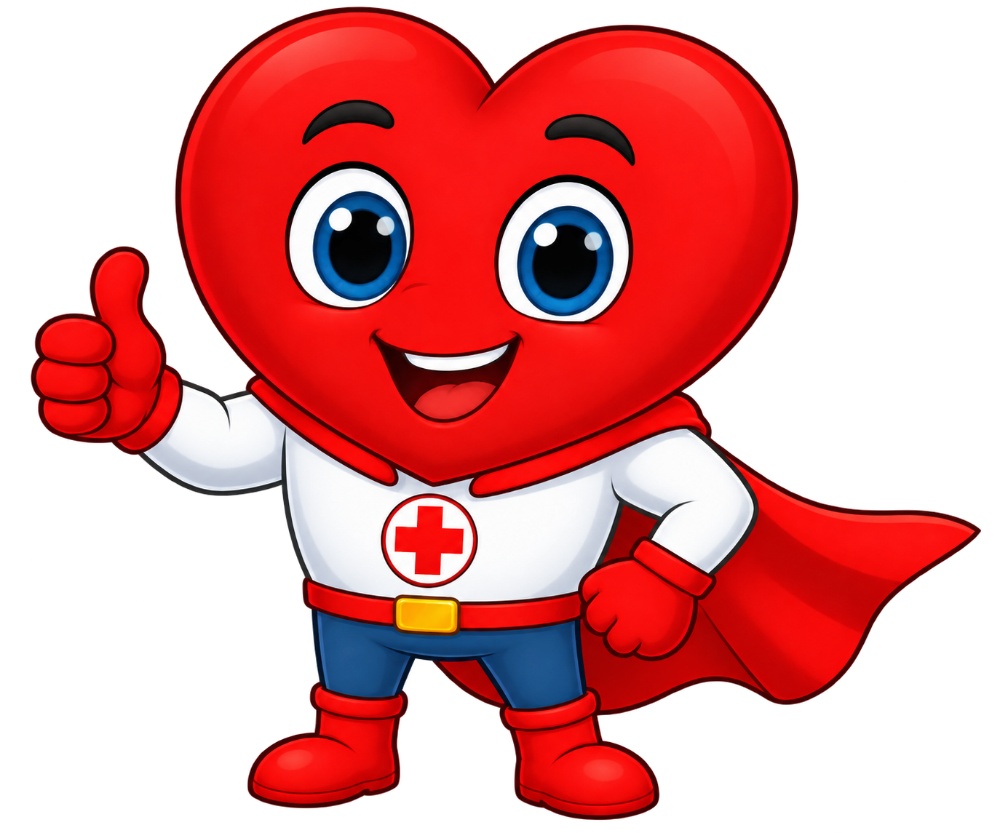
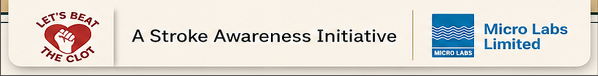

B
Content for patient awareness

Thanks for your Participation!
You’ve taken an important step towards a stroke-free tomorrow.
E
E - Eye (Vision)
Changes
F
F - Face drooping
A
A - Arm Weakness
S
S - Speech
Difficulty
T
Time to call
emergency service
(112/108)

Disclaimer:
- This initiative and its gamification tool are intended solely for stroke awareness and educational purposes.
- The tool is designed to help participants learn and remember common warning signs of stroke and does not constitute medical advice, diagnosis, or treatment.
- It is not intended to replace evaluation by a qualified healthcare professional.
- If you or someone else experiences symptoms suggestive of a stroke, seek immediate emergency medical assistance and consult a qualified healthcare professional.
- Do not rely on this educational tool to diagnose or rule out a stroke.
*Available at: American Stroke Association. B.E.F.A.S.T. warning signs. Stroke.org.
https://www.stroke.org/en [Accessed on: 12th Aug 2026]